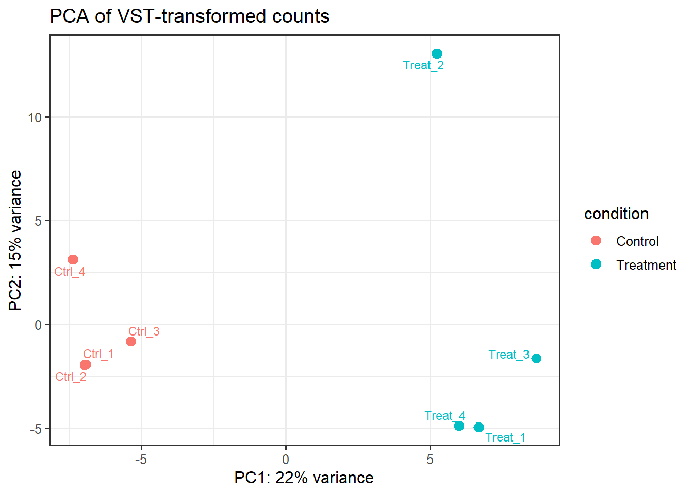
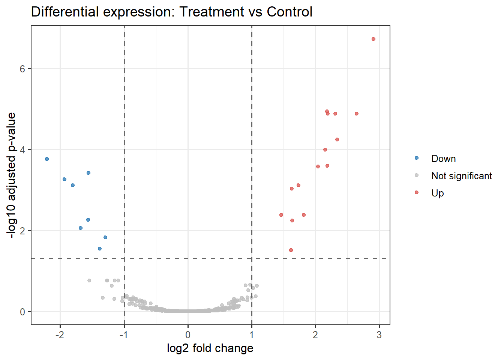
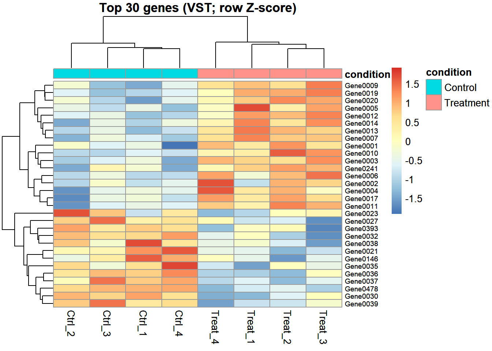

setwd("D:/Users/99588/Desktop/新手教程/资料库/生物信息学入门实践手册配套文件")
dir.create("results", showWarnings = FALSE)0. 设置工作目录
建议在 RStudio 中打开本项目文件夹作为 Project。
若不是从项目根目录运行，请修改 setwd()。
1. 安装并加载 CRAN 包（首次运行安装）
cran_pkgs <- c("ggplot2", "pheatmap", "ggrepel")
for (p in cran_pkgs) {
if (!requireNamespace(p, quietly = TRUE)) install.packages(p)
}
library(ggplot2)Warning: 程序包'ggplot2'是用R版本4.4.3 来建造的library(pheatmap)Warning: 程序包'pheatmap'是用R版本4.4.3 来建造的library(ggrepel)# DESeq2 属于 Bioconductor。首次安装时取消下方注释运行一次：
# if (!requireNamespace("BiocManager", quietly = TRUE)) install.packages("BiocManager")
# BiocManager::install("DESeq2")
if (!requireNamespace("DESeq2", quietly = TRUE)) {
stop("未检测到 DESeq2。请先运行：if (!requireNamespace('BiocManager')) install.packages('BiocManager'); BiocManager::install('DESeq2')")
}
library(DESeq2)载入需要的程序包：S4Vectors载入需要的程序包：stats4载入需要的程序包：BiocGenerics
载入程序包：'BiocGenerics'The following objects are masked from 'package:stats':
IQR, mad, sd, var, xtabsThe following objects are masked from 'package:base':
anyDuplicated, aperm, append, as.data.frame, basename, cbind,
colnames, dirname, do.call, duplicated, eval, evalq, Filter, Find,
get, grep, grepl, intersect, is.unsorted, lapply, Map, mapply,
match, mget, order, paste, pmax, pmax.int, pmin, pmin.int,
Position, rank, rbind, Reduce, rownames, sapply, saveRDS, setdiff,
table, tapply, union, unique, unsplit, which.max, which.min
载入程序包：'S4Vectors'The following object is masked from 'package:utils':
findMatchesThe following objects are masked from 'package:base':
expand.grid, I, unname载入需要的程序包：IRangesWarning: 程序包'IRanges'是用R版本4.4.2 来建造的
载入程序包：'IRanges'The following object is masked from 'package:grDevices':
windows载入需要的程序包：GenomicRanges载入需要的程序包：GenomeInfoDbWarning: 程序包'GenomeInfoDb'是用R版本4.4.2 来建造的载入需要的程序包：SummarizedExperiment载入需要的程序包：MatrixGenericsWarning: 程序包'MatrixGenerics'是用R版本4.4.2 来建造的载入需要的程序包：matrixStatsWarning: 程序包'matrixStats'是用R版本4.4.2 来建造的
载入程序包：'MatrixGenerics'The following objects are masked from 'package:matrixStats':
colAlls, colAnyNAs, colAnys, colAvgsPerRowSet, colCollapse,
colCounts, colCummaxs, colCummins, colCumprods, colCumsums,
colDiffs, colIQRDiffs, colIQRs, colLogSumExps, colMadDiffs,
colMads, colMaxs, colMeans2, colMedians, colMins, colOrderStats,
colProds, colQuantiles, colRanges, colRanks, colSdDiffs, colSds,
colSums2, colTabulates, colVarDiffs, colVars, colWeightedMads,
colWeightedMeans, colWeightedMedians, colWeightedSds,
colWeightedVars, rowAlls, rowAnyNAs, rowAnys, rowAvgsPerColSet,
rowCollapse, rowCounts, rowCummaxs, rowCummins, rowCumprods,
rowCumsums, rowDiffs, rowIQRDiffs, rowIQRs, rowLogSumExps,
rowMadDiffs, rowMads, rowMaxs, rowMeans2, rowMedians, rowMins,
rowOrderStats, rowProds, rowQuantiles, rowRanges, rowRanks,
rowSdDiffs, rowSds, rowSums2, rowTabulates, rowVarDiffs, rowVars,
rowWeightedMads, rowWeightedMeans, rowWeightedMedians,
rowWeightedSds, rowWeightedVars载入需要的程序包：BiobaseWelcome to Bioconductor
Vignettes contain introductory material; view with
'browseVignettes()'. To cite Bioconductor, see
'citation("Biobase")', and for packages 'citation("pkgname")'.
载入程序包：'Biobase'The following object is masked from 'package:MatrixGenerics':
rowMediansThe following objects are masked from 'package:matrixStats':
anyMissing, rowMedians2. 读取数据
counts_df <- read.csv("data/rnaseq_counts.csv", row.names = 1, check.names = FALSE)
meta <- read.csv("data/sample_metadata.csv", stringsAsFactors = FALSE)
# 样本信息行顺序必须与 count matrix 列顺序一致
stopifnot(all(meta$sample %in% colnames(counts_df)))
counts_df <- counts_df[, meta$sample, drop = FALSE]
rownames(meta) <- meta$sample
meta$condition <- factor(meta$condition, levels = c("Control", "Treatment"))
stopifnot(identical(colnames(counts_df), rownames(meta)))
stopifnot(all(as.matrix(counts_df) >= 0))
stopifnot(all(as.matrix(counts_df) == round(as.matrix(counts_df))))
cat("Count matrix dimensions:", dim(counts_df), "\n")Count matrix dimensions: 500 8 cat("Sample metadata:\n")Sample metadata:print(meta) sample condition
Ctrl_1 Ctrl_1 Control
Ctrl_2 Ctrl_2 Control
Ctrl_3 Ctrl_3 Control
Ctrl_4 Ctrl_4 Control
Treat_1 Treat_1 Treatment
Treat_2 Treat_2 Treatment
Treat_3 Treat_3 Treatment
Treat_4 Treat_4 Treatmentcat("Counts summary:\n")Counts summary:print(summary(as.vector(as.matrix(counts_df)))) Min. 1st Qu. Median Mean 3rd Qu. Max.
1.0 53.0 115.0 218.2 239.0 6690.0 3. 过滤低表达基因
# 教学阈值：至少在 4 个样本中 count >10。真实项目应结合测序深度与设计决定。
keep <- rowSums(counts_df >= 10) >= 4
counts_filt <- as.matrix(counts_df[keep, , drop = FALSE])
cat("Genes before filtering:", nrow(counts_df), "\n")Genes before filtering: 500 cat("Genes after filtering:", nrow(counts_filt), "\n")Genes after filtering: 498 4. DESeq2 差异表达分析
dds <- DESeqDataSetFromMatrix(
countData = round(counts_filt),
colData = meta,
design = ~ condition
)converting counts to integer modedds <- DESeq(dds)estimating size factorsestimating dispersionsgene-wise dispersion estimatesmean-dispersion relationshipfinal dispersion estimatesfitting model and testingres <- results(dds, contrast = c("condition", "Treatment", "Control"), alpha = 0.05)
res_df <- as.data.frame(res)
res_df$gene_id <- rownames(res_df)
res_df <- res_df[order(res_df$padj, na.last = TRUE), ]
write.csv(res_df, "results/deseq2_all_results.csv", row.names = FALSE)
# 标记显著差异基因：示例阈值 padj < 0.05 且 |log2FC| >= 1
res_df$significance <- "Not significant"
res_df$significance[!is.na(res_df$padj) & res_df$padj < 0.05 & res_df$log2FoldChange >= 1] <- "Up"
res_df$significance[!is.na(res_df$padj) & res_df$padj < 0.05 & res_df$log2FoldChange <= -1] <- "Down"
write.csv(subset(res_df, significance != "Not significant"),
"results/deseq2_significant_results.csv", row.names = FALSE)5. PCA：使用 VST 转换后的表达矩阵
# 对于基因数较少的教学数据，直接使用完整的方差稳定化转换
vsd <- varianceStabilizingTransformation(dds, blind = FALSE)
pca <- plotPCA(vsd, intgroup = "condition", returnData = TRUE)using ntop=500 top features by variancepercentVar <- round(100 * attr(pca, "percentVar"))
p_pca <- ggplot(pca, aes(PC1, PC2, color = condition, label = name)) +
geom_point(size = 3) +
geom_text_repel(show.legend = FALSE, size = 3) +
xlab(paste0("PC1: ", percentVar[1], "% variance")) +
ylab(paste0("PC2: ", percentVar[2], "% variance")) +
ggtitle("PCA of VST-transformed counts") +
theme_bw(base_size = 12)
print(p_pca)
ggsave("results/PCA.png", p_pca, width = 7, height = 5, dpi = 300)
ggsave("results/PCA.pdf", p_pca, width = 7, height = 5)6. 火山图
volcano_df <- res_df
volcano_df$neglog10padj <- -log10(pmax(volcano_df$padj, .Machine$double.xmin))
volcano_df$significance <- factor(volcano_df$significance,
levels = c("Down", "Not significant", "Up"))
p_volcano <- ggplot(volcano_df, aes(log2FoldChange, neglog10padj, color = significance)) +
geom_point(alpha = 0.75, size = 1.4, na.rm = TRUE) +
scale_color_manual(values = c("Down" = "#2878B5",
"Not significant" = "grey75",
"Up" = "#D9534F")) +
geom_vline(xintercept = c(-1, 1), linetype = "dashed", color = "grey40") +
geom_hline(yintercept = -log10(0.05), linetype = "dashed", color = "grey40") +
labs(title = "Differential expression: Treatment vs Control",
x = "log2 fold change", y = "-log10 adjusted p-value", color = NULL) +
theme_bw(base_size = 12)
print(p_volcano)
ggsave("results/volcano.png", p_volcano, width = 7, height = 5, dpi = 300)
ggsave("results/volcano.pdf", p_volcano, width = 7, height = 5)7. 热图：选择 padj 最小的前 30 个基因，使用 VST 表达值按基因标准化
top_genes <- res_df$gene_id[!is.na(res_df$padj)]
top_genes <- head(top_genes, 30)
if (length(top_genes) >= 2) {
mat <- assay(vsd)[top_genes, , drop = FALSE]
annotation_col <- data.frame(condition = meta$condition)
rownames(annotation_col) <- rownames(meta)
p_heat <- pheatmap(mat,
scale = "row",
annotation_col = annotation_col,
show_rownames = TRUE,
fontsize_row = 7,
main = "Top 30 genes (VST; row Z-score)")
print(p_heat) # 展示到绘图面板
# 下面照旧保存文件
png("results/heatmap_top30.png", width = 1800, height = 1500, res = 200)
print(p_heat) # 保存图片时也建议加print，防止空白图
dev.off()
pdf("results/heatmap_top30.pdf", width = 8, height = 7)
print(p_heat)
dev.off()
}
png
2 8. 导出标准化表达矩阵（仅用于可视化/下游探索，不作为 DESeq2 输入）
norm_counts <- counts(dds, normalized = TRUE)
write.csv(norm_counts, "results/normalized_counts_for_exploration.csv")
cat("\\n完成。请查看 results/ 文件夹。\\n")\n完成。请查看 results/ 文件夹。\ncat("重要提醒：这是模拟数据；DESeq2 输入必须是原始整数 count，不要将 TPM/FPKM 作为 countData。\\n")重要提醒：这是模拟数据；DESeq2 输入必须是原始整数 count，不要将 TPM/FPKM 作为 countData。\n